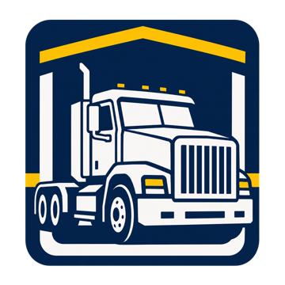
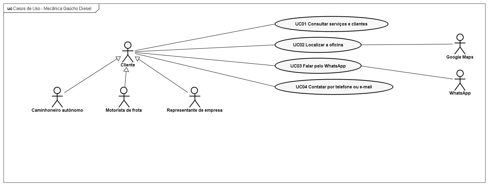
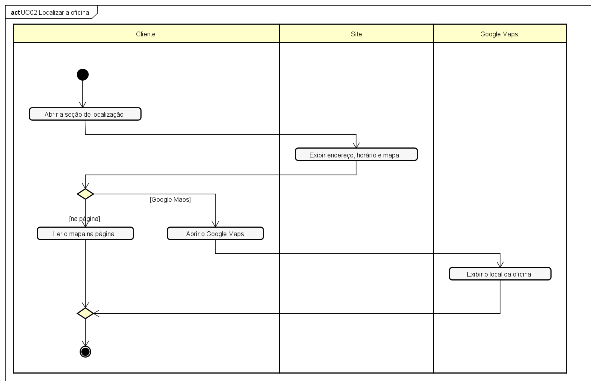
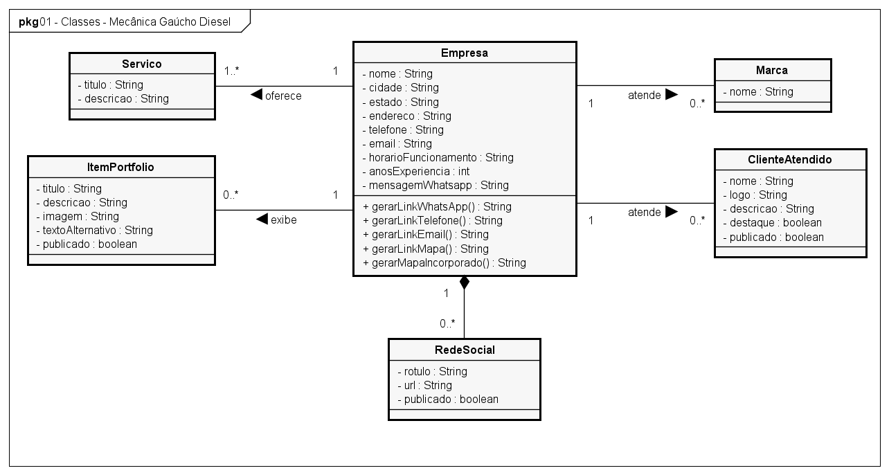
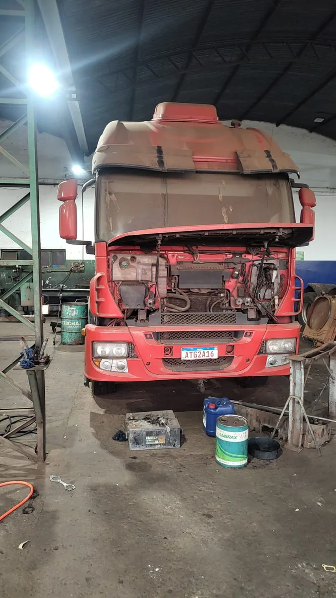
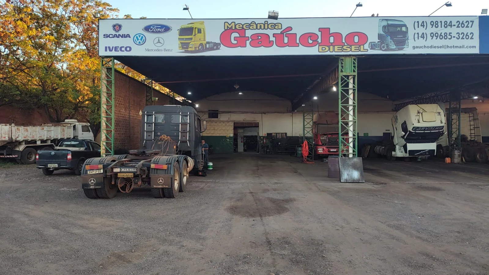
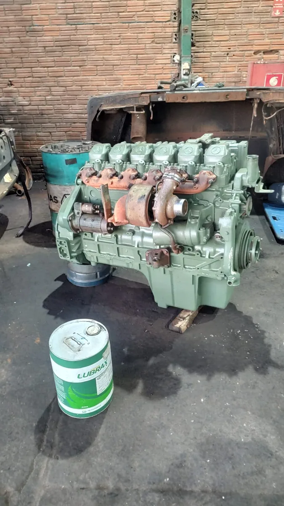

Proprietário
Ganha presença digital e SEO. A oficina poderá ser encontrada no Google e divulgará serviços, endereço e contato em um só lugar.

AEX · Engenharia de Software II
do site institucional da
Mecânica Gaúcho Diesel
Prof. Thiago · Bandeirantes, 2026




Público externo e benefício
Ganha presença digital e SEO. A oficina poderá ser encontrada no Google e divulgará serviços, endereço e contato em um só lugar.
Têm acesso fácil às informações e encontram a oficina com mais facilidade, pela busca ou pelo mapa.
Quem são os clientes (aproximadamente)
Entre as empresas atendidas
Grupo Unipetro · TransJordano · Transportadora Nichele · Transnardo Transportes · Transportadora Aliança de Ourinhos · Transportadora Boa Viagem · Fazenda Fama e Santa Inês

A oficina
Oficina de caminhões com 18 anos de atuação, na Rodovia Raposo Tavares, em Ourinhos (SP). Atende caminhoneiros, empresas e frotas.
Horário
Segunda a sexta, das 8h às 18h
Socorro mecânico
Ourinhos e cidades da região
Serviços
15, de mecânica geral a diagnóstico por scanner
Proprietário
Flávio Moia, beneficiário do site
Marcas atendidas
Identificação do problema

Como levantamos
Questionário sobre a rotina da oficina, no lugar da entrevista presencial.
Ações realizadas
O site foi construído a partir da modelagem e publicado em 25 de outubro de 2026. As ações abaixo levaram do problema ao modelo.
01
Questionário sobre a rotina da oficina, no lugar da entrevista presencial.
02
Seções e dados de serviços, marcas, clientes, galeria e empresa que o site deve apresentar.
03
Histórias com testes de aceitação, requisitos funcionais e não funcionais e regras de negócio.
04
Seis diagramas no Astah UML: casos de uso, quatro de atividades e classes.
05
Material apresentado ao proprietário, que o aprovou sem pedir alterações.
Escopo
Serviços, marcas atendidas, galeria de trabalhos, sobre e principais clientes.
Endereço, horário e mapa, com link para o Google Maps. Dados para os buscadores.
Botão do WhatsApp com mensagem pronta, telefone e e-mail com um toque.
Fora do escopo
A oficina já usa um sistema interno para esses controles.
Elaboração da proposta
8
histórias
4 + 5
RF + RNF
4
casos de uso
4
diagramas
6
classes
Histórias de usuário
HU07Encontrar a oficina no Google M
Como cliente que busca mecânica diesel em Ourinhos, quero encontrar a oficina nos resultados de busca para chegar ao site sem conhecer o endereço.
Teste de aceitação
As páginas têm title e description próprios. Os dados da oficina estão em dados estruturados do tipo AutoRepair. O site publica um sitemap e um robots.txt que o indica.
Cliente
Proprietário
MoSCoW · M obrigatória · S importante · C desejável
Requisitos
Cada requisito foi avaliado por benefício, risco e estabilidade.
Diagrama de casos de uso
Autônomo, motorista de frota e representante de empresa fazem os mesmos usos, por isso especializam Cliente.
Google Maps no UC02 e WhatsApp no UC03.
Não geram caso de uso: uma é atendida por requisito não funcional, e a outra é regra de conteúdo.
Diagramas de atividades
Cada diagrama tem uma raia para o Cliente, uma para o Site e, quando há, uma para o sistema externo.
As decisões são as escolhas do cliente: ver os clientes ou encerrar, mapa da página ou Google Maps, botão fixo ou Solicitar atendimento, telefone ou e-mail.
Clique em um diagrama para ampliar.
Diagrama de classes
As classes vêm do conteúdo que o site deve exibir: serviços, marcas, galeria, clientes e redes sociais.
Só Empresa e RedeSocial têm composição. As demais associações são conceituais.
As operações de Empresa geram os links de WhatsApp, telefone, e-mail e Google Maps.
O campo "publicado" vira a regra RN01.
Rastreabilidade
Cada caso de uso, atividade e classe pode ser rastreado até uma história e até um componente do site. Assim dá para conferir se o site atende ao que foi especificado.
A HU07 segue por outro caminho: o requisito RNF04, atendido pelo layout base, pela página inicial e pelo robots.txt.
História
HU02Encontrar a oficina: endereço, horário e mapa
Requisito
RF02Exibir endereço, horário e mapa, com link para o Google Maps
Caso de uso
UC02Localizar a oficina, com o Google Maps como sistema externo
Atividade
Figura do UC02Ler o mapa da página ou abrir o Google Maps
Classe
EmpresaOperações gerarLinkMapa() e gerarMapaIncorporado()
Componente do site
LocationSectionSeção de localização, com o mapa e o botão do Google Maps
Validação com o proprietário
O material foi apresentado ao proprietário, que fez o papel do cliente. Ele confirmou que as histórias descrevem a oficina e o uso do site e aprovou sem pedir alterações. A especificação foi usada para construir o site.
Material validado
Considerações finais
Benefício
O proprietário ganha presença digital e SEO. Os clientes encontram a oficina com facilidade e têm acesso fácil aos serviços, ao endereço e ao contato.
Continua no sistema interno
Orçamento, financeiro e estoque, que a oficina já controla no computador.
AEX · Engenharia de Software II
← → navegar · F tela cheia · N notas · clique no diagrama para ampliar